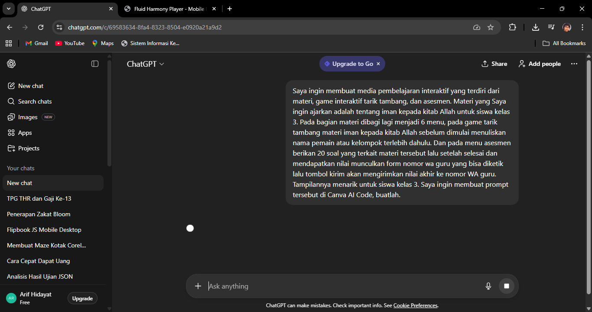
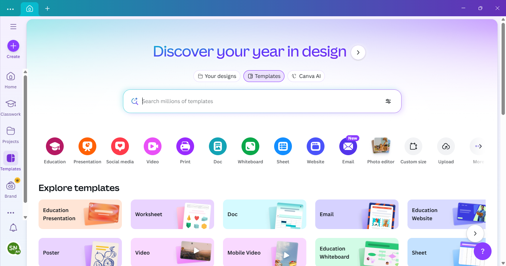
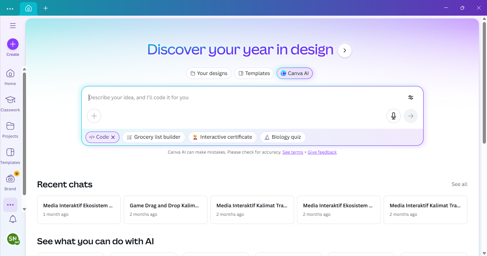
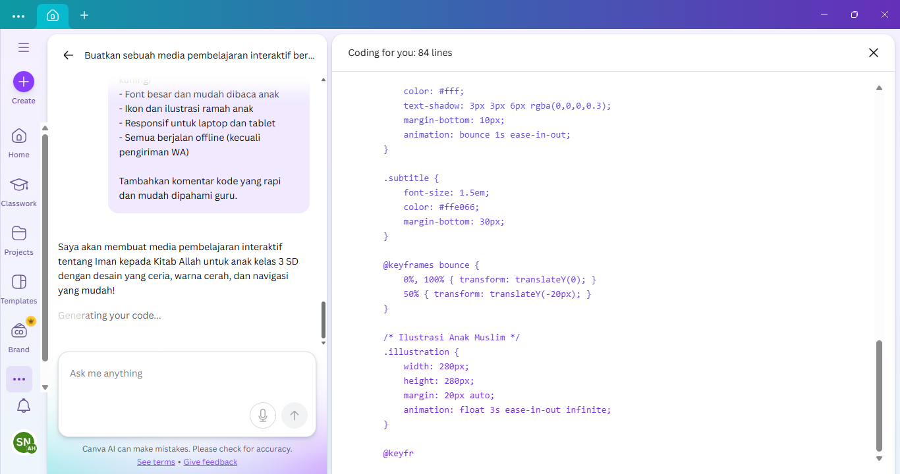
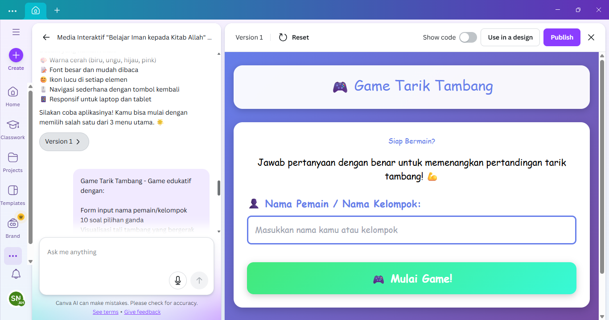
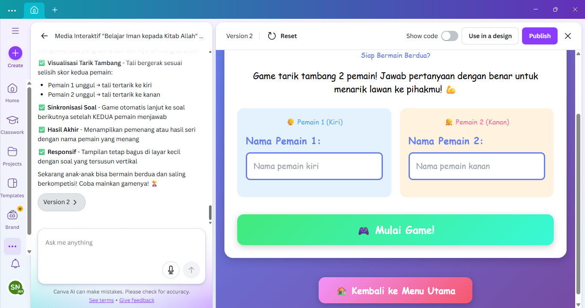
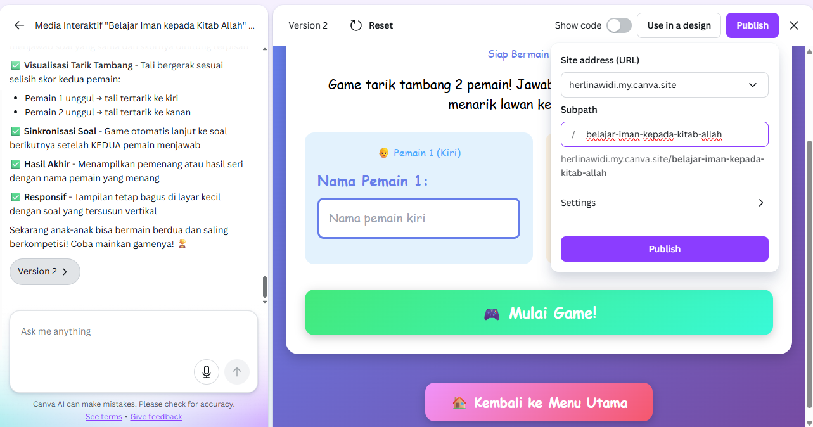
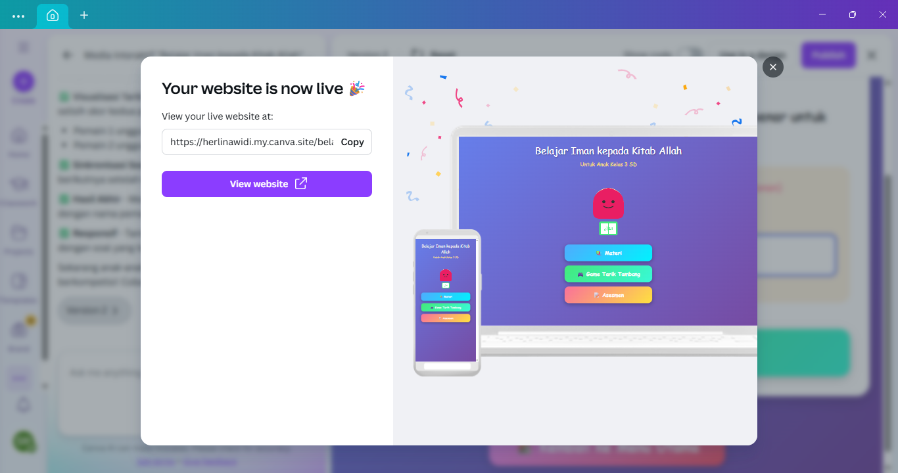

Sebagai guru kreatif kita harus berinovasi untuk membuat kelas kita lebih menyenangkan, ditambah lagi kini setipa sekolah sudah dibekali layar digital interaktif untuk mendukungnya. Ada beberapa jenis tools atau perangkat yang bisa kita manfaatkan untuk mendukungnya salah satunya adalah Canva AI Code. Dengan Canva AI Code merupakan tools untuk membuat media pembelajaran lebih interaktif dengan sentuhan jari di Interactive Flat Panel (IFP). Namun, kita terbatas pada menuliskan perintah atau prompt yang akan kita tuliskan ke Canva AI Code tersebut. Kita akan dibantu oleh AI Chatbot lainnya untuk membuat prompt yang cocok untuk di Canva AI Code tersebut. Kali ini kita akan menggunakan AI Chatbot ChatGPT dari OpenAI. Sebagai contoh, kita akan membuat media pembelajaran tentang materi Iman Kepada Allah Swt. yaitu materi kelas 3 SD.

Sebagai contoh Saya membuat prompt di ChatGPT sebagai berikut :
Saya ingin membuat media pembelajaran interaktif yang terdiri dari materi, game interaktif tarik tambang, dan asesmen. Materi yang Saya ingin ajarkan adalah tentang iman kepada kitab Allah untuk siswa kelas 3. Pada bagian materi dibagi lagi menjadi 6 menu, pada game tarik tambang materi iman kepada kitab Allah sebelum dimulai menuliskan nama pemain atau kelompok terlebih dahulu. Dan pada menu asesmen berikan 20 soal yang terkait materi tersebut lalu setelah selesai dan mendapatkan nilai munculkan form nomor wa guru yang bisa diketik lalu tombol kirim akan mengirimkan nilai akhir ke nomor WA guru. Tampilannya menarik untuk siswa kelas 3. Saya ingin membuat prompt tersebut di Canva AI Code, buatlah.
Pada prompt ini, Saya meminta ChatGPT membuat prompt untuk Canva AI Code materi tentang Iman Kepada Allah Swt. dimana yang menjadi poin penekanan adalah pada menu asesmen. Biasanya menu asesmen pada media interaktif tidak bisa dikirim ke guru berapa hasilnya. Namun pada prompt ini Saya menambahkan "setelah selesai dan mendapatkan nilai munculkan form nomor wa guru yang bisa diketik lalu tombol kirim akan mengirimkan nilai akhir ke nomor WA guru" sehingga guru mendapatkan rekap nilainya. Tentu prompt ini adalah khusus untuk dikirimkan ke siswa berbeda dengan media pembelajaran yang ditampilkan di IFP dengan tanpa ada form kirim ke WA Guru, walaupun sebenarnya di skip juga bisa.
Setelah kita mendapatkan prompt Canva AI Code dari AI Chatbot ChatGPT, kini kita membuka aplikasi Canva. Untuk menggunakannya kita harus memilih bagian Canva AI dan dibawah pilih Code. Sehingga Canva mengerti harus membuat apa.


Setelah itu kita meng copy paste hasil prompt yang telah dibuat ChatGPT ke kotak prompt Canva AI Code lalu biarkan Canva AI Code bekerja sendiri sampai selesai.

Setelah selesai, kita coba dulu pada bilah pratinjau. Pada hasil kerja Saya, pada game tarik tambang hanya satu pemain. Saya merevisi kerja Canva AI Code dengan menambahkan perintah "Buatlah tarik tambang menjadi dua pemain dengan soal kanan untuk pemain satu dan soal kiri untuk pemain 2."


Setelah kita coba dan sesuai dengan apa yang kita inginkan, selanjutnya kita Publish dengan link Canva yang kita punya. Sebelum di Publish kita bsia mengganti linknya sesuai yang inginkan.

Langkah terakhir adalah kita tunggu sampai jadi dan siap dibagikan ke siswa atau ditampilkan pada IFP dengan menggunakan Google atau Chrome.

Sekian sedikit tutorial tentang penggunaan Canva AI Code ini untuk pembuatan Media Pembelajaran Interaktif ini. Silahkan amati tiru dan modifikasi untuk media pembelajaran interaktif lainnya.